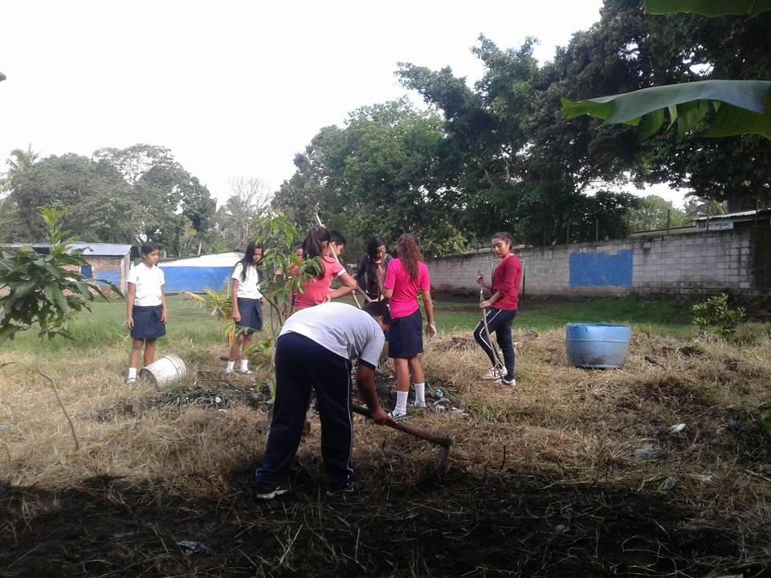
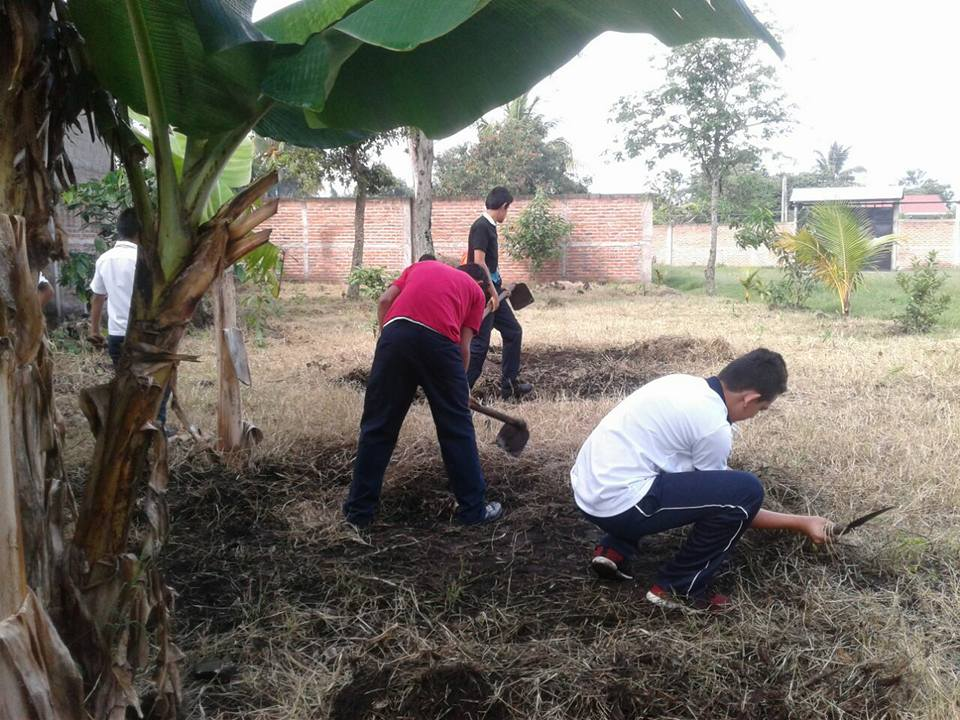
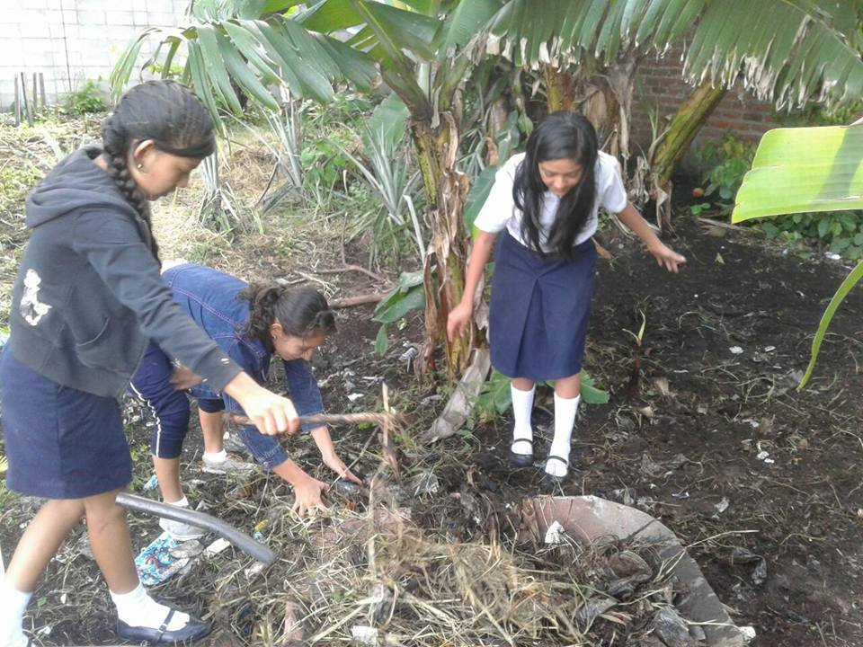

Huerto Escolar

Se basa en el cultivo de diferentes hortalizas como por ejemplo:maíz,frijol,ayote,chile verde,rábano,espinaca,entre otros.En este proyecto participan alumonos de la institución los cuales se encargan de dar los cuidados necesarios a la tierra, otro objetivo es que los alumnos amplíen sus conocimientos en agricultura.
